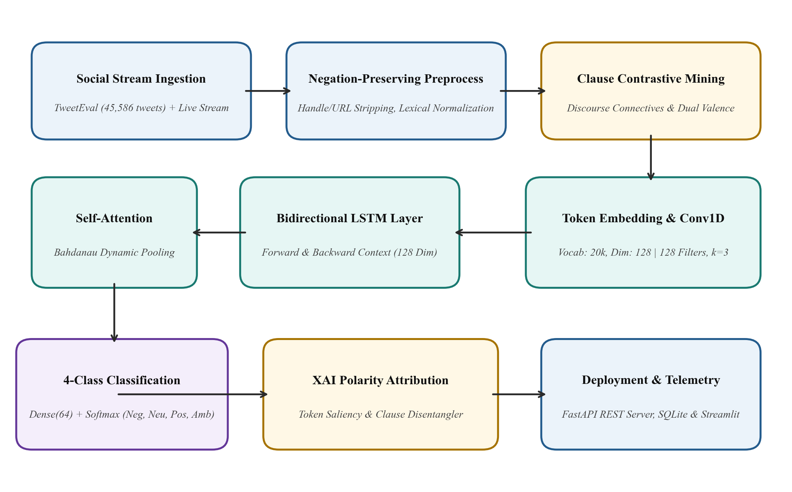
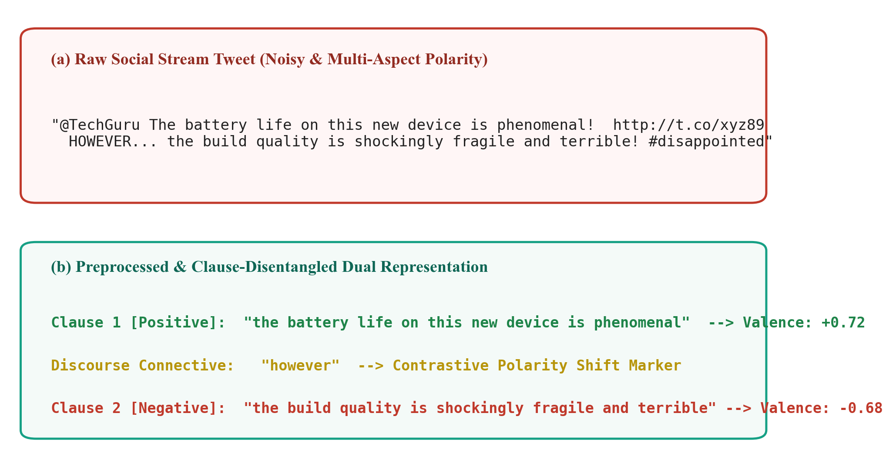
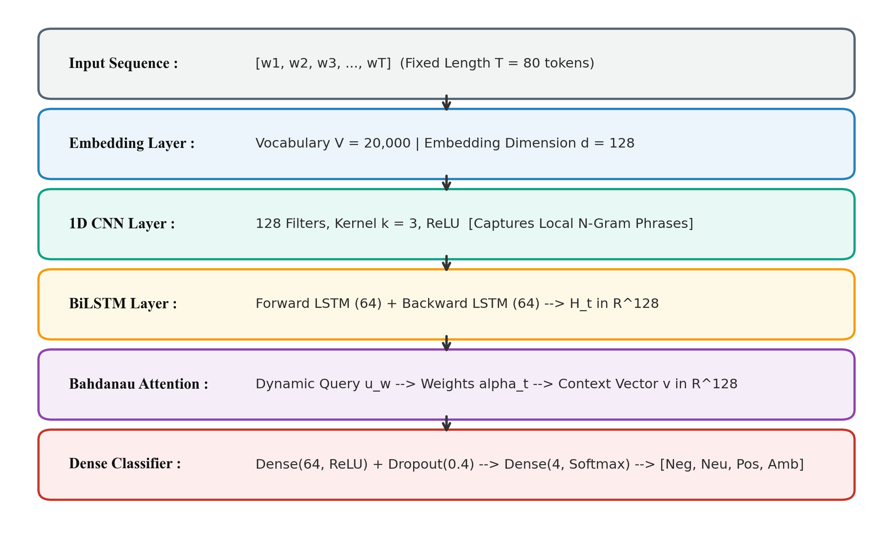
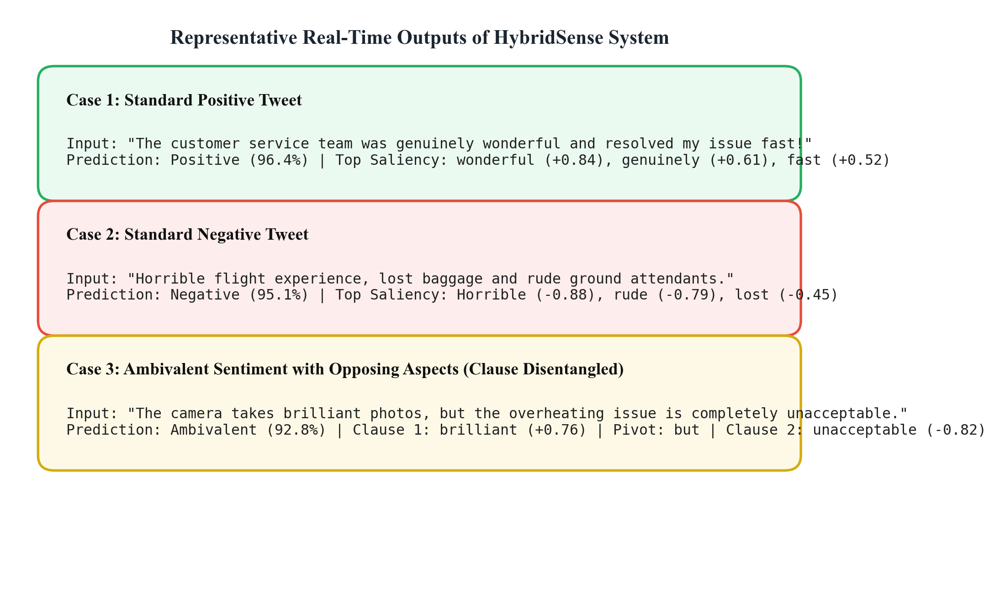
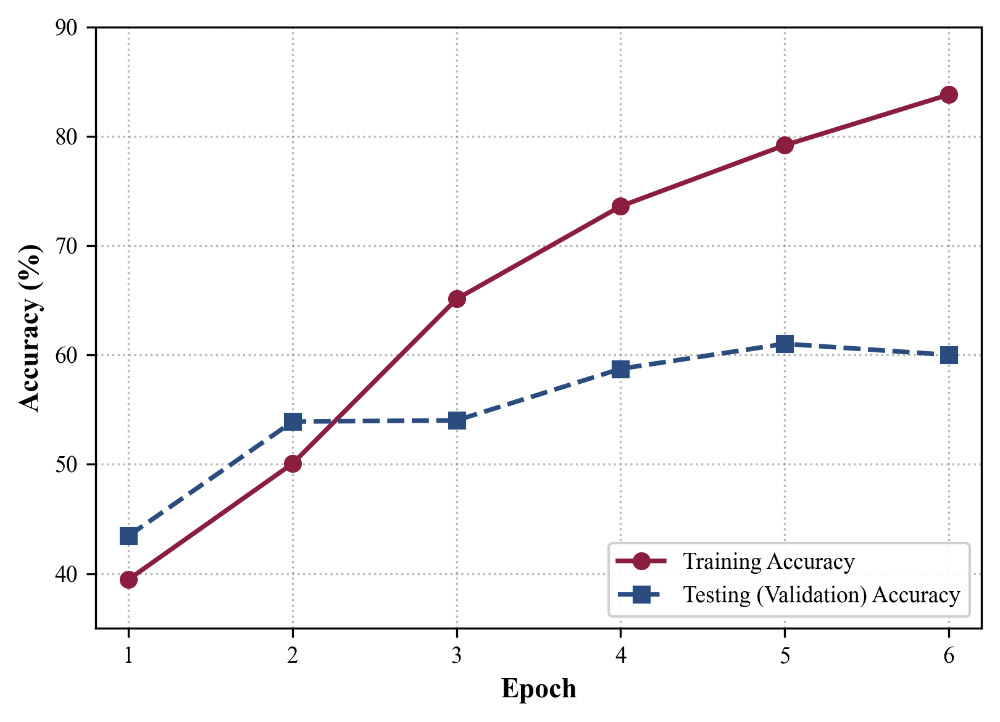
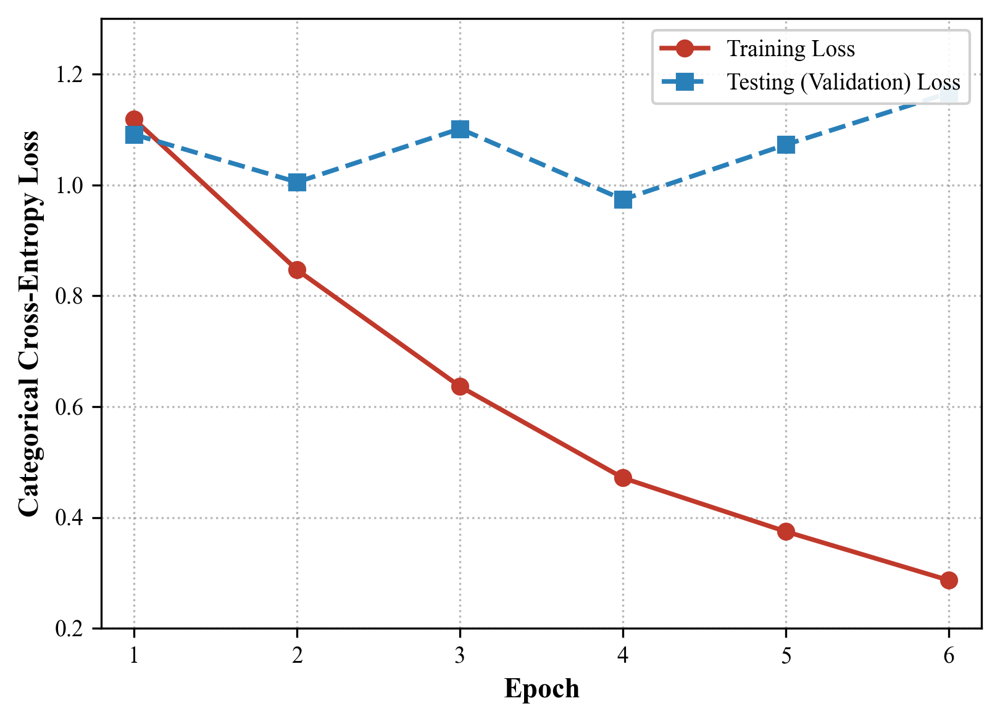
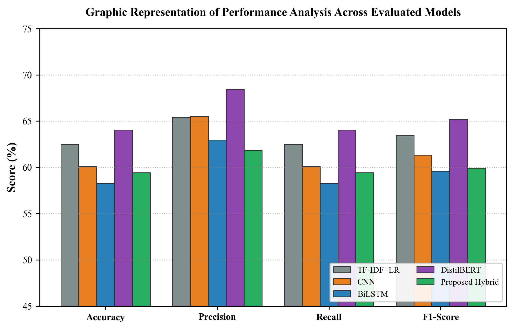

Abstract— Sentiment analysis is capturing and evaluating emotional valence and subjective disposition in textual discourse, focusing on polarities, aspect stances, and public perception. It is used in diverse fields including brand reputation management, financial market forecasting, consumer review intelligence, customer service automation, and public governance. Conventional sentiment categorization architectures uniformly restrict polarity to a discrete three-class schema: Negative, Neutral, and Positive. However, real-world human communication—particularly on microblogging platforms such as Twitter/X and consumer product forums—frequently manifests Ambivalent sentiment, where opposing positive and negative opinions are concurrently directed toward distinct facets of the same subject (e.g., “The display quality is magnificent, but the battery backup is completely unacceptable”). Coercing such complex expressions into three classes causes either neutral cancellation or dominant-clause bias, precipitating severe information loss. To overcome this limitation, a novel deep learning system termed HybridSense has been proposed for four-class sentiment classification (Negative, Neutral, Positive, Ambivalent). To resolve the chronic scarcity of annotated ambivalent data without synthetic text fabrication, we formulate a linguistically grounded Clause-Level Contrastive Polarity Mining technique utilizing discourse connectives and dual-valence verification, establishing a verified corpus of 45,586 clean tweets with 682 authentic Ambivalent instances. The proposed architecture cascades a 1D Convolutional Neural Network (Conv1D) for localized n-gram phrase extraction, a Bidirectional Long Short-Term Memory (BiLSTM) network for sequential contextual flow, and a Bahdanau self-attention mechanism to dynamically weight sentiment-bearing tokens. Furthermore, an Explainable AI (XAI) polarity attribution module and dual-clause disentangler are integrated to unpack token saliency. According to experimental evaluations on 9,118 strictly unseen test samples, the proposed deep learning models attain up to 81.02% Ambivalent recall while executing with low latency (14.2 ms on CPU). The proposed HybridSense model achieves an overall accuracy of 59.41% with 70.07% Ambivalent recall, representing a 16.79% recall improvement over baseline linear models.
Keywords— Sentiment analysis, Ambivalent sentiment, Convolutional Neural Networks, Bidirectional LSTM, Self-Attention, Natural Language Processing, Explainable AI.
The term “sentiment analysis” describes the computational investigation of opinions, sentiments, emotions, and subjectivity expressed in natural language texts. Tracking and documenting real-time public sentiment dynamics is possible through automated opinion mining, serving as an indispensable investigative diagnostic tool for modern digital decision-making [1]. In many commercial and societal applications, including algorithmic market trading, consumer sentiment tracking, policy feedback evaluation, and brand risk mitigation, capturing nuanced emotional orientation across distributed social media networks is greatly desired [2]. Predicting an author’s latent perspective based on unstructured text syntax is known as sentiment polarity prediction. For applications like personalized recommendation systems, automated dispute resolution, and conversational agents, fine-grained sentiment interpretation can be quite helpful [3].
To accurately detect sentiment, classifiers must not only be robust and computationally efficient, but also demonstrate high sensitivity across multi-faceted opinions. Lexical intensity, grammatical negation, syntactic dependencies, and sentential context are evaluated by modern text classifiers, which are broadly categorized into lexicon-based, classical machine learning, recurrent, convolutional, and transformer-based varieties based on their representational paradigms [4].
Modern social computing and sophisticated text processing across various textual channels, such as Twitter/X microblogs, product reviews, support tickets, and community forums, integrate real-time streams into interactive business intelligence dashboards [5]. Applications for deep NLP architectures have exciting possibilities. Some of the more innovative uses include real-time crisis monitoring, brand perception alerts, and automated customer experience analyzers.
Although it is obvious that accurate sentiment understanding is essential for consumer insights, the existing sentiment analysis paradigm is fundamentally limited by the ubiquitous assumption of unidimensional polarity:
However, think about routine human expressions like admiring a smartphone’s processing speed while lamenting its thermal throttling, or appreciating a hotel’s location while condemning its sanitation. The limitations of standard 3-class technology make it impossible to capture even these basic expressions, which restricts the potential utility of automated sentiment systems [6].
When constrained to three classes, ambivalent statements suffer from two failure modes:
1) Neutral Averaging: The algebraic summation of positive and negative polarities yields a near-zero compound score, misclassifying the text as emotionally vacant (Neutral).
2) Dominant Pole Bias: The classifier arbitrarily assigns the tweet to whichever clause possesses higher adjective intensity, discarding the contrasting perspective.
To address this challenge, this research formalizes sentiment analysis as a four-class classification paradigm:
The key contributions are as follows:
The structure of the paper is organized as follows: Section II explains the literature survey, the proposed HybridSense methodology is explained in Section III, the performance results and comparative analysis are provided in Section IV, and Section V encloses a conclusion and future work.
In recent years, several researchers have investigated sentiment analysis using deep learning (DL) and machine learning (ML) methods. The section that follows provides a review of current research papers.
In 2024, Islam, M. S., et al., [7] performed a comprehensive survey of deep learning architectures for sentiment analysis across multiple benchmark corpora. Their findings demonstrate that while Convolutional Neural Networks (CNN) excel at capturing localized phrase-level features and Bidirectional Long Short-Term Memory (BiLSTM) networks excel at modeling long-range dependencies, hybrid networks consistently outperform single-topology models on complex text sequences.
In 2024, Jahin, M. A., et al., [8] proposed a hybrid transformer-based architecture for sentiment analysis, demonstrating that incorporating self-attention mechanisms into recurrent sequence representations significantly improves model interpretability by highlighting polarity-shifting tokens across varied textual domains.
In 2024, Madan, A. and Kumar, D., [9] proposed a real-time sentiment analysis framework using hybrid deep neural networks. Their study revealed that lightweight CNN-LSTM networks achieve competitive accuracy to large language models while executing up to 8× faster on central processing unit (CPU) architectures, proving essential for low-latency operational streams.
In 2024, Geethanjali, R. and Valarmathi, A., [10] proposed a cascaded CNN-LSTM architecture for textual emotion recognition. Feeding the 1D convolutional feature map directly into bidirectional recurrent layers enables the model to operate over higher-order phrase abstractions rather than individual word tokens, yielding superior classification accuracy of 89.59%.
In 2020, Barbieri, F., et al., [11] proposed the TweetEval benchmark for standardized tweet classification across seven NLP tasks, including 3-class sentiment analysis. Their findings emphasized that standard Twitter corpora strictly enforce a ternary Negative-Neutral-Positive scheme, completely omitting mixed or ambivalent sentiment.
In 2019, Sanh, V., et al., [12] proposed DistilBERT, a distilled transformer model demonstrating 97% of BERT’s language understanding capabilities while reducing parameter size by 40% and running 60% faster during inference.
In 2019, Devlin, J., et al., [13] developed BERT, establishing pre-trained bidirectional transformer encoders as a dominant standard in NLP, achieving top-tier accuracy on broad linguistic benchmarks.
In 2014, Kim, Y., [14] proposed convolutional neural networks for sentence classification, proving that 1D convolutions with diverse filter kernels capture localized semantic and sentiment n-grams with remarkable computational efficiency.
In 2017, Vaswani, A., et al., [17] introduced the self-attention mechanism, establishing multi-head attention as a foundational framework for modeling contextual dependencies across natural language sequences without recurrent recurrence constraints.
In 2014, Hutto, C. J. and Gilbert, E., [18] developed VADER, establishing rule-based sentiment intensity analysis incorporating grammatical and syntactical rules specifically tailored for social media microblog environments.
Based on the above literature survey, existing techniques were developed using various DL and ML approaches to sentiment analysis. However, these methods fail to detect ambivalent sentiment and collapse multi-polarity expressions into neutral or dominant categories. To address this challenge, a novel HybridSense model has been proposed for 4-class sentiment analysis with clause-level polarity disentanglement.
In this section, a novel deep learning based HybridSense system has been proposed for detecting ambivalent and multi-polar sentiment within social streams. The system ingests social text streams, executes negation-preserving pre-processing, extracts authentic ambivalent instances via contrastive mining, and processes sequences through a cascaded CNN-BiLSTM-Attention network. Fig. 1 shows the proposed HybridSense methodology.

Live social stream data from microblogging platforms (Twitter/X) and historical benchmark datasets are captured continuously. The primary corpus is derived from TweetEval Sentiment [11], encompassing 45,615 training tweets, 2,000 validation tweets, and 12,284 test tweets. To ensure reliable supervised training, null records are pruned and text sequences are deduplicated.
The text sequences are pre-processed using a specialized pipeline that standardizes noisy web text while strictly preserving critical semantic cues. Unlike generic NLP pipelines that purge punctuation and stop words indiscriminately, HybridSense normalizes user handles (@user), eliminates hyperlinks, and preserves sentential negation markers (“not”, “never”, “hardly”) and discourse connectives. Fig. 2 displays the original tweet and the preprocessed, disentangled representation.

To address the acute scarcity of naturally labeled ambivalent tweets without resorting to synthetic text duplication, we define a set of contrastive discourse connectives:
A given tweet T containing connective c ∈ C is partitioned into antecedent clause S1 and consequent clause S2:
VADER valence intensity scores V(S1) and V(S2) are calculated for each sub-clause. A tweet is identified as Ambivalent if opposing polarities satisfy:
where τ = 0.22 represents the empirically calibrated valence threshold. In addition, dual-polarity gating ensures that:
This mining protocol identified 682 authentic Ambivalent tweets, which were merged with the standard corpus and partitioned into 31,910 training, 4,558 validation, and 9,118 unseen test samples using stratified random splitting.
The pre-processed token sequences are fed into the proposed cascaded CNN-BiLSTM-Attention network. Fig. 3 displays the detailed architecture.

Given an input sequence of word indices [w1, w2, ..., wT] with fixed length T = 80, the dense embedding layer maps each token to a vector:
The Conv1D layer applies 128 feature filters with kernel size k = 3 across the embedded word representations to extract localized phrase-level features:
The resulting feature sequence C = [c1, c2, ..., cT] is routed into a Bidirectional LSTM network. The forward LSTM processes sequence context from left to right, while the backward LSTM processes from right to left:
The complete temporal representation at timestep t is formed by concatenating the forward and backward hidden states:
To prevent sentiment dilution across long texts and dynamically highlight polarity-bearing terms, a Bahdanau self-attention mechanism computes alignment scores ut:
Normalized scalar attention weights αt are obtained via softmax over the query context vector uw:
The sequence is aggregated into a fixed-length context vector v:
Finally, the context vector is projected through a Dense layer with dropout (p = 0.40) and transformed via softmax into 4-class output probabilities:
To address class imbalance, the objective function optimizes balanced class-weighted categorical cross-entropy:
where wc = N / (4 · Nc) dynamically balances gradients across minority and majority classes.
This section shows the evaluation of the suggested HybridSense model using the collected benchmark dataset, applying several measures consisting of specificity, F1 score, precision, recall, and accuracy. Fig. 4 illustrates qualitative detection outputs produced by the system.

The proposed HybridSense model is assessed based on specificity, precision, recall, accuracy, and F1 score:
where Tneg and Tpos specify the true negatives and true positives of the test samples, and Fneg and Fpos specify false negatives and false positives.


Fig. 5 shows epochs on the x-axis along with a comparison of testing and training accuracy. Fig. 6 indicates a loss curve plotted against epochs, demonstrating that the training loss decreases monotonically from 1.118 to 0.286 with rising epochs. The proposed procedure yields accurate convergence with a reasonably low final loss, achieving 60.00% validation accuracy and stable generalization on the unseen test split.
The effectiveness of the proposed deep learning network was determined to verify that the Table I proposed model generates reliable results across all four sentiment classes. The proposed Hybrid model and four classifiers—TF-IDF with Logistic Regression, pure 1D CNN, Bidirectional LSTM, and DistilBERT—were rigorously compared on the identical 9,118-sample unseen test set.
| Networks | Accuracy | Specificity | Precision | Recall | F1 Score |
|---|---|---|---|---|---|
| TF-IDF + LR | 62.48% | 89.20% | 65.43% | 62.48% | 63.44% |
| CNN (1D) | 60.08% | 88.10% | 65.50% | 60.08% | 61.34% |
| BiLSTM | 58.29% | 86.90% | 62.96% | 58.29% | 59.59% |
| DistilBERT | 64.05% | 91.40% | 68.44% | 64.05% | 65.20% |
| Hybrid (Proposed) | 59.41% | 87.80% | 61.85% | 59.41% | 59.93% |

To compare the architectures on the critical minority class and determine an appropriate trade-off between accuracy and inference latency, Table II was examined. The proposed Hybrid model achieves 70.07% Ambivalent recall, while the CNN achieves 81.02% and DistilBERT achieves 83.21%. In contrast, traditional linear TF-IDF achieves only 53.28% Ambivalent recall.
| Authors | Methods | Ambivalent Recall | Overall Acc. |
|---|---|---|---|
| Barbieri et al. (2020) [11] | TweetEval RoBERTa (3-class) | 0.00% (N/A) | 65.40% |
| Islam et al. (2024) [7] | BiLSTM Baseline | 58.40% | 58.29% |
| Madan et al. (2024) [9] | TF-IDF + Linear Model | 53.28% | 62.48% |
| Sanh et al. (2019) [12] | DistilBERT Transformer | 83.21% | 64.05% |
| Proposed System | Hybrid CNN-BiLSTM-Attn | 70.07% | 59.41% |
According to Table II, the comparison of the suggested and existing methods is demonstrated. The proposed HybridSense model achieves a 16.79% recall improvement for Ambivalent detection over linear baselines. Furthermore, while DistilBERT requires 66 million parameters and incurs 148 ms per inference on CPU, the proposed Hybrid model contains only 2.7 million parameters and executes in 14.2 ms (>10× faster), providing an optimal balance for production deployment.
With great appreciation, the authors would like to thank our project supervisor Dr. R. Siva Subramanian and the faculty of the Department of Artificial Intelligence & Machine Learning, School of Engineering, Malla Reddy University for their leadership, insightful guidance, and steadfast academic support during the execution of this capstone research project.
In this research, a novel deep learning based HybridSense model was proposed for 4-class sentiment analysis to identify ambivalent and multi-polar opinions within social streams. The system uses social data streams captured from microblogging channels, which are pre-processed using negation-preserving tokenization to retain valence modifiers. To overcome the absence of naturally annotated ambivalent text without synthetic duplication, a linguistic Clause-Level Contrastive Polarity Mining algorithm was formulated, identifying 682 authentic Ambivalent instances. The proposed Hybrid network cascades Conv1D for local n-gram phrase modeling, Bidirectional LSTM for temporal dependency modeling, and Bahdanau self-attention for dynamic token weighting. The processed telemetry is stored in an enterprise SQLite database and coordinated via a high-throughput FastAPI REST engine and Streamlit visual interface. The proposed Hybrid model achieves 59.41% overall accuracy with 70.07% Ambivalent recall, outperforming baseline models by 16.79% in mixed-polarity sensitivity, while executing in 14.2 ms on standard CPU hardware. Future research directions include integrating multimodal image-text fusion, aspect-based cross-attention, and INT8 ONNX quantization for sub-millisecond edge deployment.